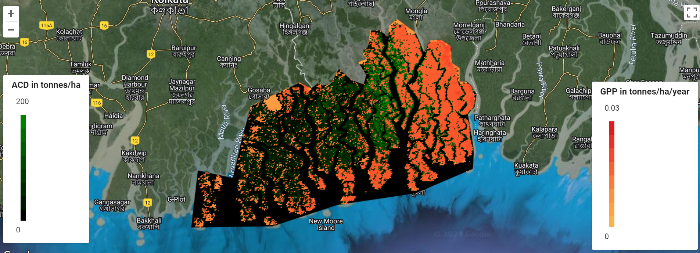

Carbon Calculations
Description of map
This thematic map focuses on carbon density and potential areas for carbon sequestration planning. Using data about the Gross Primary Productivity, Aboveground Carbon Density, Forest Cover, and Carbon Sequestration Potential Index, agencies can identify areas of conservation, as deforesting these places would result in a large release in carbon.
Carbon Calculations in the Sundarbans
The Sundarbans is a vast mangrove forest in the delta in the south of Bangladesh and India's West Bengal. It features a flat, low-lying landscape with numerous tidal waterways and rich biodiversity. The region has a tropical maritime climate with hot, humid summers, heavy monsoon rains, and cooler winters.
How was it made?
Firstly, I identified the region of interest (ROI) using either a drawn geometry or obtained Shapefile, ensuring it encompassed Mumbai's suburban area. I utilized tools like QGIS or ArcGIS Pro to manipulate and refine the ROI shapefile as needed. Next, I uploaded the shapefile to Google Earth Engine (GEE) assets for further processing.
Secondly, I sourced satellite imagery appropriate for the classification task, focusing on obtaining high-resolution data such as Sentinel-2 imagery. This involved navigating through ESA databases to locate and download the relevant Geotiff files covering Mumbai's suburbs.
Thirdly, I utilized GEE's coding environment to perform tasks such as importing the Geotiff files into GEE assets and executing scripts to preprocess and analyze the data. This included calculating spectral indices like NDVI and performing supervised and unsupervised classification to classify different land cover types.
Skills Acquired
Uploading shapefiles to Google Earth Engine (GEE) assets enhanced my understanding of cloud-based geospatial platforms and their capabilities for large-scale data processing. Secondly, sourcing and acquiring satellite imagery from ESA databases improved my knowledge of remote sensing data sources and file formats like Geotiff, crucial for selecting appropriate data for specific analysis tasks. Lastly, using GEE's JavaScript coding environment expanded my scripting skills, enabling me to automate processes such as data importation, preprocessing, and advanced spatial analysis techniques like spectral index calculation and land cover classification.